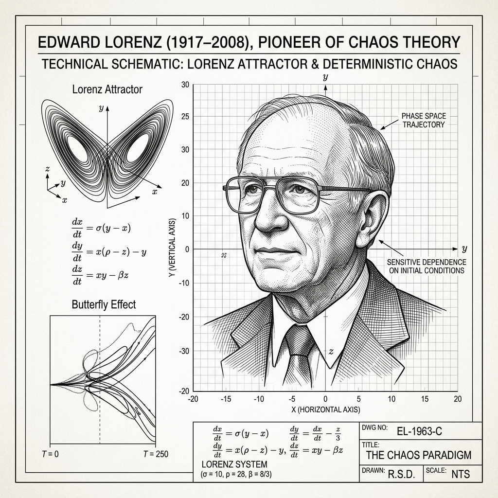
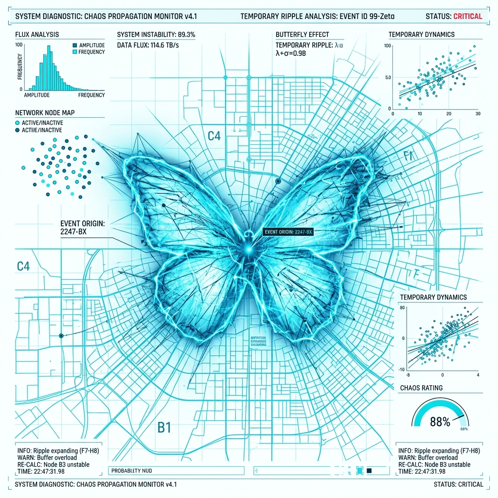

VERİ.LORENZ_1961
X

EDWARD LORENZ
Kaos teorisinin öncüsü. Başlangıç koşullarındaki küçük değişikliklerin öngörülemeyen sonuçlar doğurduğunu keşfetti. Ayrıntılar için tıklayın.
KAOS TEORİSİ
Öngörülebilirlik bir yanılsamadır.
GÖZLEM.KELEBEK
X

KELEBEK ETKİSİ
Başlangıç noktasındaki en küçük yuvarlama hatası evrenin sonunu değiştirebilir.